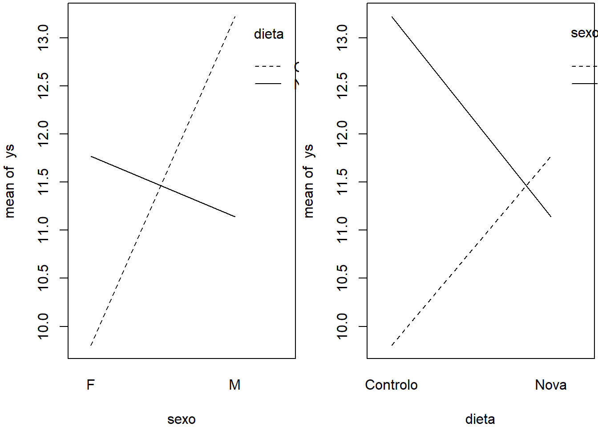
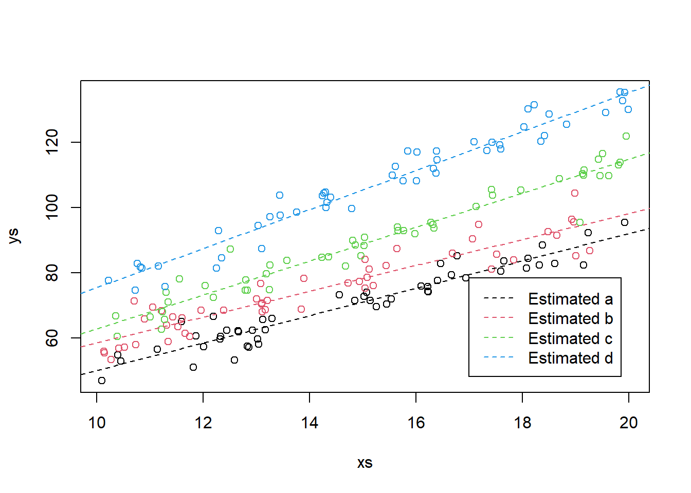
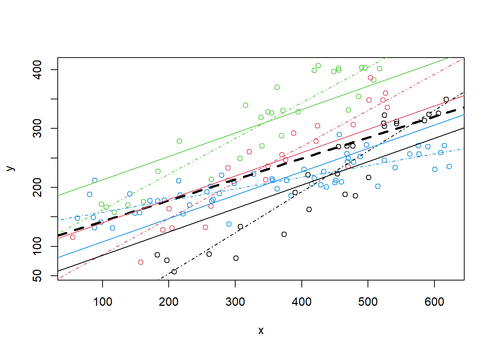
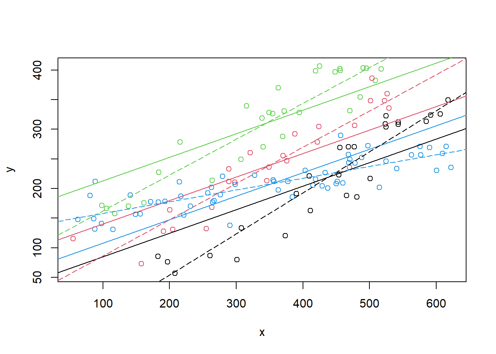

Chapter 11 ANCOVA with different slopes: interactions
In the previous section we saw an ANCOVA, but we assumed all groups would have the same slope. So the rate of change of the response with the continuous covariate would not depend on the level of the factor covariate. Here we extend that model to consider different slopes per group, and for that we will need interactions.
11.1 About interactions
Interactions are useful when the influence of a covariate on the response variable depends on the level of a second covariate. As an example, consider two different diets that we are trying to assess the efficacy on terms of weight gain. We record weight gains for both sexes.
#--------------------------------------------------------
#Interactions
#### with factor covariates
#--------------------------------------------------------
set.seed(123)
n=100
sexo=rep(c("M","F"),each=n)
dieta=rep(c("Controlo","Nova"),times=n)
ys=10+3*(sexo=="M")+2*(dieta=="Nova")-4*(sexo=="M")*(dieta=="Nova")+rnorm(2*n,mean=0,sd=2)
plot(ys~as.factor(paste0(sexo,dieta)))
##
## Call:
## lm(formula = ys ~ sexo * dieta)
##
## Residuals:
## Min 1Q Median 3Q Max
## -4.7590 -1.2968 -0.1798 1.1942 6.7145
##
## Coefficients:
## Estimate Std. Error t value Pr(>|t|)
## (Intercept) 9.8022 0.2673 36.675 < 2e-16 ***
## sexoM 3.4188 0.3780 9.045 < 2e-16 ***
## dietaNova 1.9653 0.3780 5.200 5.00e-07 ***
## sexoM:dietaNova -4.0457 0.5345 -7.569 1.44e-12 ***
## ---
## Signif. codes: 0 '***' 0.001 '**' 0.01 '*' 0.05 '.' 0.1 ' ' 1
##
## Residual standard error: 1.89 on 196 degrees of freedom
## Multiple R-squared: 0.3015, Adjusted R-squared: 0.2908
## F-statistic: 28.2 on 3 and 196 DF, p-value: 3.326e-15par(mfrow=c(1,2),mar=c(4,4,0.2,0.2))
interaction.plot(x.factor=sexo, trace.factor=dieta, response=ys)
interaction.plot(x.factor=dieta, trace.factor=sexo, response=ys)
We can see what these interaction plots might look like for different realities.
#interaction plots
set.seed(121)
# different interactions and abcense of interaction
par(mfcol=c(2,4),mar=c(4,4,0.2,0.2))
#large negative interaction
ys=10+3*(sexo=="M")+2*(dieta=="Nova")-4*(sexo=="M")*(dieta=="Nova")+rnorm(2*n,mean=0,sd=2)
interaction.plot(x.factor=sexo, trace.factor=dieta, response=ys)
interaction.plot(x.factor=dieta, trace.factor=sexo, response=ys)
#positive interaction
ys=10+3*(sexo=="M")+2*(dieta=="Nova")+4*(sexo=="M")*(dieta=="Nova")+rnorm(2*n,mean=0,sd=2)
interaction.plot(x.factor=sexo, trace.factor=dieta, response=ys)
interaction.plot(x.factor=dieta, trace.factor=sexo, response=ys)
#no interaction
ys=10+3*(sexo=="M")+2*(dieta=="Nova")+rnorm(2*n,mean=0,sd=2)
interaction.plot(x.factor=sexo, trace.factor=dieta, response=ys)
interaction.plot(x.factor=dieta, trace.factor=sexo, response=ys)
#small negative interaction
ys=10+3*(sexo=="M")+2*(dieta=="Nova")-2*(sexo=="M")*(dieta=="Nova")+rnorm(2*n,mean=0,sd=2)
interaction.plot(x.factor=sexo, trace.factor=dieta, response=ys)
interaction.plot(x.factor=dieta, trace.factor=sexo, response=ys)
11.2 Task 1 Implementing the ANCOVA with different slopes
The previous model, explored in Chapter 10, assumed that the slopes were the same across the different groups. But that might not be the case in many scenarios.
What would change if they were different? We extend the previous case to the scenario where the slope of the relationship is also different per treatment.
We simulate treatments and data, just in the same way as before, but this gives us the option to change things later in this chapter only, and do it separately if we want.
#----------------------------------------------------------------
#all slopes different
set.seed(1234)
n<-200
xs <- runif(n,10,20)
tr <- c("a","b","c","d")
type <- rep(tr,each=n/4)
cores <- rep(1:4,each=n/4)Now we simulate the response
ys=3+
ifelse(type=="a",5,ifelse(type=="b",8,ifelse(type=="c",10,12)))+
4*xs+ifelse(type=="a",0.2,ifelse(type=="b",0.5,ifelse(type=="c",1,2)))*xs+
rnorm(n,0,4)If the above code is opaque, we present a different implementation below. Note the code that follows is just the same as the code above, but it might be simpler to understand that the setting implies that we have both different intercepts and slopes per treatment.
#same as
intercept=3+ifelse(type=="a",5,ifelse(type=="b",8,ifelse(type=="c",10,12)))
slope=xs*(4+ifelse(type=="a",0.2,ifelse(type=="b",0.5,ifelse(type=="c",1,2))))
ys=slope+intercept+rnorm(n,0,4)We can look at the resulting data, as well as the real model that generated the data (as usual, data is the sistematic component induced by the assumed model to which we add some random error)
par(mfrow=c(1,2),mar=c(4,4,0.5,0.5))
plot(xs,ys,col=cores)
abline(3+5,4+0.2,lwd=3,col=1)
abline(3+8,4+0.5,lwd=3,col=2)
abline(3+10,4+1,lwd=3,col=3)
abline(3+12,4+2,lwd=3,col=4)
As before, it is actually not that easy to confirm the slopes and intercepts are different, as the intercept is not shown in the above plot. We can zoom out the plot to show us the intercepts (Figure 11.1), which are by definition, where the lines cross the vertical dashed line, i.e., when x=0 in the Cartesian referential.
plot(xs,ys,col=cores,xlim=c(0,20),ylim=c(0,150))
abline(3+5,4+0.2,lwd=3,col=1)
abline(3+8,4+0.5,lwd=3,col=2)
abline(3+10,4+1,lwd=3,col=3)
abline(3+12,4+2,lwd=3,col=4)
abline(h=c(3+5,3+8,3+10,3+12),v=0,col=c(1,2,3,4,1),lty=2)
Figure 11.1: Zooming out on the data so that the (fifferent) intercepts are visible
Now, we implement the ANCOVA linear model, but with an interaction term between the type and xs. An interaction between two variables, say A and B, is defined in R syntax as A*B, and so for the corresponding linear model we specify
We can look at the output of the model
##
## Call:
## lm(formula = ys ~ xs + type + xs * type)
##
## Residuals:
## Min 1Q Median 3Q Max
## -14.5511 -2.7070 0.2239 2.2766 11.3763
##
## Coefficients:
## Estimate Std. Error t value Pr(>|t|)
## (Intercept) 7.9570 3.1985 2.488 0.013707 *
## xs 4.2084 0.2143 19.638 < 2e-16 ***
## typeb 10.6830 4.2375 2.521 0.012513 *
## typec 2.8307 4.3047 0.658 0.511588
## typed 7.5008 4.4644 1.680 0.094556 .
## xs:typeb -0.2342 0.2889 -0.811 0.418617
## xs:typec 0.9924 0.2836 3.500 0.000579 ***
## xs:typed 1.7875 0.2927 6.106 5.54e-09 ***
## ---
## Signif. codes: 0 '***' 0.001 '**' 0.01 '*' 0.05 '.' 0.1 ' ' 1
##
## Residual standard error: 3.958 on 192 degrees of freedom
## Multiple R-squared: 0.965, Adjusted R-squared: 0.9637
## F-statistic: 755.2 on 7 and 192 DF, p-value: < 2.2e-16This is an output similar to the corresponding ANOVA table (implemented via aov, the R function that produces ANOVA tables from expressions akin to linear models). The difference is that in such a case the outputs come in terms of the variables, not their levels. This would be
## Df Sum Sq Mean Sq F value Pr(>F)
## xs 1 49119 49119 3134.87 < 2e-16 ***
## type 3 32682 10894 695.28 < 2e-16 ***
## xs:type 3 1034 345 21.99 2.77e-12 ***
## Residuals 192 3008 16
## ---
## Signif. codes: 0 '***' 0.001 '**' 0.01 '*' 0.05 '.' 0.1 ' ' 1Note that the overall F statistic from the regression model has an F-statistic of 755.2, with 7 and 192 degrees of freedom. That corresponds to the composite test with the null hypothesis “are all parameters equal to 0”, which in the ANOVA table, is separated in 3 testes, one for each parameter, with 1, 3 and 3 degrees of freedom each. The residual degrees of freedom are naturally the same in all these tests.
Naturally, we can now evaluate the values of the estimated coefficients, and in particular we can use them to estimate the corresponding regression lines per group. For type a we have this
## (Intercept)
## 7.957025## xs
## 4.208363in other words, ys=7.9570252+4.2083626 \(\times\) xs , for type b we have this
#type b
lm.ancova2$coefficients[1]+lm.ancova2$coefficients[3];lm.ancova2$coefficients[2]+lm.ancova2$coefficients[6]## (Intercept)
## 18.64006## xs
## 3.974212in other words, ys=18.640062+3.9742116 \(\times\) xs, for type c we have this
#type c
lm.ancova2$coefficients[1]+lm.ancova2$coefficients[4];lm.ancova2$coefficients[2]+lm.ancova2$coefficients[7]## (Intercept)
## 10.78774## xs
## 5.200757in other words, ys=10.7877404+5.2007572 \(\times\) xs, and for type d we have this
#type d
lm.ancova2$coefficients[1]+lm.ancova2$coefficients[5];lm.ancova2$coefficients[2]+lm.ancova2$coefficients[8]## (Intercept)
## 15.45779## xs
## 5.995865in other words, ys=15.4577929+5.995865 \(\times\) xs.
we can now add these to the earlier plots, to see how well we have estimated the different lines per treatment
#real lines
par(mfrow=c(1,1),mar=c(4,4,0.5,0.5))
plot(xs,ys,col=cores)
abline(3+5,4+0.2,lwd=3,col=1)
abline(3+8,4+0.5,lwd=3,col=2)
abline(3+10,4+1,lwd=3,col=3)
abline(3+12,4+2,lwd=3,col=4)
#estimated lines
#type a
abline(lm.ancova2$coefficients[1],lm.ancova2$coefficients[2],lty=2,col=1,lwd=3)
#type b
abline(lm.ancova2$coefficients[1]+lm.ancova2$coefficients[3],
lm.ancova2$coefficients[2]+lm.ancova2$coefficients[6],lty=2,col=2,lwd=3)
#type c
abline(lm.ancova2$coefficients[1]+lm.ancova2$coefficients[4],
lm.ancova2$coefficients[2]+lm.ancova2$coefficients[7],lty=2,col=3,lwd=3)
#type b
abline(lm.ancova2$coefficients[1]+lm.ancova2$coefficients[5],
lm.ancova2$coefficients[2]+lm.ancova2$coefficients[8],lty=2,col=4,lwd=3)
legend("topleft",legend = tr,lwd=2,col=1:4,inset=0.05)
legend("bottomright",legend =paste("Estimated",tr),lwd=3,lty=2,col=1:4,inset=0.05)
Remember, if this was a real analysis, you would not know the truth, so at best, you would be able to see the predicted lines, but not the real lines, just as in the plot below
# In real life, we only see this
plot(xs,ys,col=cores)
#plot the lines
abline(lm.ancova2$coefficients[1],lm.ancova2$coefficients[2],lwd=1,col=1,lty=2)
abline(lm.ancova2$coefficients[1]+lm.ancova2$coefficients[3],lm.ancova2$coefficients[2]+lm.ancova2$coefficients[6],lwd=1,col=2,lty=2)
abline(lm.ancova2$coefficients[1]+lm.ancova2$coefficients[4],lm.ancova2$coefficients[2]+lm.ancova2$coefficients[7],lwd=1,col=3,lty=2)
abline(lm.ancova2$coefficients[1]+lm.ancova2$coefficients[5],lm.ancova2$coefficients[2]+lm.ancova2$coefficients[8],lwd=1,col=4,lty=2)
legend("bottomright",legend =paste("Estimated",tr),lwd=1,lty=2,col=1:4,inset=0.05)
In the previous image the estimated lines were very consistent with the known truth. This would be different if we had less information, i.e., less data. The following image represents the same scenario, but where instead of 200 observations in total, we only had
#all slopes different
set.seed(1234)
n<-20
xs3 <- runif(n,10,20)
tr <- c("a","b","c","d")
type3 <- rep(tr,each=n/4)
cores3 <- rep(1:4,each=n/4)
ys3=3+
ifelse(type3=="a",5,ifelse(type3=="b",8,ifelse(type3=="c",10,12)))+
4*xs3+ifelse(type3=="a",0.2,ifelse(type3=="b",0.5,ifelse(type3=="c",1,2)))*xs3+
rnorm(n,0,4)
lm.ancova3=lm(ys3~xs3+type3+xs3*type3)
#real lines
par(mfrow=c(1,1),mar=c(4,4,0.5,0.5))
plot(xs3,ys3,col=cores3)
abline(3+5,4+0.2,lwd=3,col=1)
abline(3+8,4+0.5,lwd=3,col=2)
abline(3+10,4+1,lwd=3,col=3)
abline(3+12,4+2,lwd=3,col=4)
#estimated lines
#type a
abline(lm.ancova3$coefficients[1],lm.ancova3$coefficients[2],lty=2,col=1,lwd=3)
#type b
abline(lm.ancova3$coefficients[1]+lm.ancova3$coefficients[3],
lm.ancova3$coefficients[2]+lm.ancova3$coefficients[6],lty=2,col=2,lwd=3)
#type c
abline(lm.ancova3$coefficients[1]+lm.ancova3$coefficients[4],
lm.ancova3$coefficients[2]+lm.ancova3$coefficients[7],lty=2,col=3,lwd=3)
#type b
abline(lm.ancova3$coefficients[1]+lm.ancova3$coefficients[5],
lm.ancova3$coefficients[2]+lm.ancova3$coefficients[8],lty=2,col=4,lwd=3)
legend("topleft",legend = tr,lwd=2,col=1:4,inset=0.05)
legend("bottomright",legend =paste("Estimated",tr),lwd=3,lty=2,col=1:4,inset=0.05)
As expected, in this plot the different estimated lines are considerably further away from the real lines. It is nonetheless quite remarkable how with only 5 points per group, we still obtain estimates not that far from the truth. However, if one looks at the summary of the model
##
## Call:
## lm(formula = ys3 ~ xs3 + type3 + xs3 * type3)
##
## Residuals:
## Min 1Q Median 3Q Max
## -4.5796 -2.3670 -0.1640 0.9371 9.1474
##
## Coefficients:
## Estimate Std. Error t value Pr(>|t|)
## (Intercept) -1.6002 11.1033 -0.144 0.888
## xs3 4.7503 0.7005 6.781 1.96e-05 ***
## type3b 5.9856 14.7514 0.406 0.692
## type3c 3.6526 15.6372 0.234 0.819
## type3d 23.9730 14.8631 1.613 0.133
## xs3:type3b 0.2205 0.9740 0.226 0.825
## xs3:type3c 0.9038 0.9924 0.911 0.380
## xs3:type3d 0.5410 1.0006 0.541 0.599
## ---
## Signif. codes: 0 '***' 0.001 '**' 0.01 '*' 0.05 '.' 0.1 ' ' 1
##
## Residual standard error: 3.836 on 12 degrees of freedom
## Multiple R-squared: 0.9657, Adjusted R-squared: 0.9457
## F-statistic: 48.26 on 7 and 12 DF, p-value: 7.539e-08none of the interaction terms would be considered relevant at the usual significance levels. In other words, with such few data we would not be able to distinguish that the slope was different in the different groups, and a common slope model would be preferred.
## df AIC
## lm.ancova3 9 118.3212
## lm.ancova3b 6 113.8420It is interesting to note that the slopes were in general closer to the true values than the intercepts.
library(knitr)
#true intercepts
TI<-unique(3+ifelse(type=="a",5,ifelse(type=="b",8,ifelse(type=="c",10,12))))
#true slopes
TS<-unique(4+ifelse(type=="a",0.2,ifelse(type=="b",0.5,ifelse(type=="c",1,2))))
#estimated intercepts
EI<-round(c(lm.ancova2$coefficients[1],lm.ancova2$coefficients[1]+lm.ancova2$coefficients[3],lm.ancova2$coefficients[1]+lm.ancova2$coefficients[4],lm.ancova2$coefficients[1]+lm.ancova2$coefficients[5]),2)
#estimated slopes
ES<-round(c(lm.ancova2$coefficients[2],lm.ancova2$coefficients[2]+lm.ancova2$coefficients[6],lm.ancova2$coefficients[2]+lm.ancova2$coefficients[7],lm.ancova2$coefficients[2]+lm.ancova2$coefficients[8]),2)
#pooled table
kable(cbind(c("Type","Intercept (true)","Intercept (estimated)","Slope (true)","Slope (estimated)"),rbind(unique(type),TI,EI,TS,ES)))| (Intercept) | (Intercept) | (Intercept) | (Intercept) | ||
|---|---|---|---|---|---|
| Type | a | b | c | d | |
| TI | Intercept (true) | 8 | 11 | 13 | 15 |
| EI | Intercept (estimated) | 7.96 | 18.64 | 10.79 | 15.46 |
| TS | Slope (true) | 4.2 | 4.5 | 5 | 6 |
| ES | Slope (estimated) | 4.21 | 3.97 | 5.2 | 6 |
Can you think about an intuitive reason for that being the case? The answer lies in figure 11.1. There is no data near the intercept, so there is actually more information about the slope than about the intercept. Things could have been different if the data for the continous response was also available around the value 0.
11.3 Task 2 Modeling a data set
In a given dataset we might want to explain a continuous variable as a function of a couple of explanatory variables, specifically a continuous variable and a factor. As we have seen before, this could be attempted via an ANCOVA, with or without an interaction term.Therefore, a relevant question might be to know if the interaction is needed or not, or in other words, if the different lines expressing the relationship between the continuous covariate and the response might be have different slopes per level of the factor covariate, or if on the other hand, a common slope might be possible, with different per level of the factor covariate. A third even simpler model is the one where the factor covariate is not relevant at all, or, in other words, single line would be the most parsimonious way to model the data.
We illustrate that with the data set data4lines.csv that we considered before in chapter ??, which was created using the website https://drawdata.xyz/.
To make our story a bit more intersting we again come up with a narrative. A biologist is interested in estimating what might have been the weight of a fish for which he found an operculum in the in the stomach of a dead otter (Lutra lutra). The operculum was 300 mm in diameter. He knows the fish was a barbel (genera: Barbus). We will call this biologist Carlos. His wife is called Conceição, and Conceição enjoys thinking about hard questions. She thinks stongly about all the hard questions, and when she does her eyebrows raise in a way that Carlos fears. Carlos found the dead otter in the margins of the Guadiana river in Portugal. It seems hard to believe that the otter might have eaten such a large fish. It might have been the largest fish ever eaten by a Lutra lutra, which the biologist would love to report in the next Ichtiology congress. To answer his question he visited the museum and he was able to find a sample of fish from the genus Barbus. Therefore he labouriosly weighed fish and measured opeculuns… The resulting data are our data!
Carlos reads the data in
folder<-"extfiles/"
#folder<-"../Aula7 14 10 2020/"
d4l <- read.csv(file=paste0(folder,"data4lines.csv"))
n <- nrow(d4l)He plots the data ad he sees a pattern that seems to be somewaht linear. He knows about linear regression and he fits a line to the data, and then shows the resulting plot with data, model and predictions to Conceição.
Carlos is winning, claiming that unfortunately, he suspects that the fish was not the largest ever reported. A Spanish ictiologist reported an otter having eaten a fish with 220 grams. And with his model, he predicts the opperculum belonged to a fish with a weight of about 213.7 gr (11.2).
#plot all the data
plot(y~x,xlab= "Operculum diameters (mm)",ylab="Fish length (gr)",data=d4l)
abline(lm0,lty=1,lwd=3)
abline(v=sizeo,h=lm0$coefficients[1]+lm0$coefficients[2]*sizeo,lty=2)
Figure 11.2: Pooled model of fish weight as a function of operculum diameter. Dashed lines represent predictions for a fish with a 300 mm operculum.
Conceição looks at the plots, wonders once again why she married Carlos, and asks: “What was the actual species of the operculum in your dead otter? And by the way, please, for the last time, can you put the dead otter in the garbage? It is the second time that I confuse it with a rabbit in the freezer…! One day you might have a bad surprise for dinner!”. Carlos thinks about this as says, it was Barbus sclateri. And Maria says: “Well, is the relationship between operculum diameter and fish length the same for all the species?”. Carlos - perhaps not the sharpest tool in the box as we by now have come to realize - nonetheless manages to realize what Conceição is asking about. He knows the animals in the museum were identified to the species level, and he redoes the plot coloring the points by species.

And the question that now arises in Carlos mind is, what might the best model to represent this data set, where he has measurements of two numeric variables, weight~diameter across 4 groups of observations, defined by species.
Carlos decides he can fit a linear model with both x and z as independent variables, without an interaction. Note this is the conventional ANCOVA model, just as we did before.
##
## Call:
## lm(formula = y ~ x + z, data = d4l)
##
## Residuals:
## Min 1Q Median 3Q Max
## -90.01 -35.01 2.54 35.51 108.10
##
## Coefficients:
## Estimate Std. Error t value Pr(>|t|)
## (Intercept) 45.51813 13.83069 3.291 0.00128 **
## x 0.39657 0.02516 15.763 < 2e-16 ***
## zb 54.92376 12.11597 4.533 1.28e-05 ***
## zc 128.20339 11.72572 10.934 < 2e-16 ***
## zd 22.82412 10.26509 2.223 0.02787 *
## ---
## Signif. codes: 0 '***' 0.001 '**' 0.01 '*' 0.05 '.' 0.1 ' ' 1
##
## Residual standard error: 42.5 on 133 degrees of freedom
## Multiple R-squared: 0.7332, Adjusted R-squared: 0.7252
## F-statistic: 91.38 on 4 and 133 DF, p-value: < 2.2e-16Maria reminds him again that life is more complicated than what he’d like to imagine: “Why don’t you try a model with an interaction term between opperculum diameter and species?”. And so he does.
##
## Call:
## lm(formula = y ~ x + z + x:z, data = d4l)
##
## Residuals:
## Min 1Q Median 3Q Max
## -77.569 -15.787 2.848 17.776 60.875
##
## Coefficients:
## Estimate Std. Error t value Pr(>|t|)
## (Intercept) -84.72064 19.98946 -4.238 4.24e-05 ***
## x 0.69346 0.04380 15.831 < 2e-16 ***
## zb 109.96907 25.87243 4.250 4.04e-05 ***
## zc 187.01780 24.87546 7.518 8.03e-12 ***
## zd 223.27435 21.82006 10.233 < 2e-16 ***
## x:zb -0.08161 0.06222 -1.312 0.192
## x:zc -0.08902 0.05954 -1.495 0.137
## x:zd -0.49630 0.04926 -10.075 < 2e-16 ***
## ---
## Signif. codes: 0 '***' 0.001 '**' 0.01 '*' 0.05 '.' 0.1 ' ' 1
##
## Residual standard error: 28.09 on 130 degrees of freedom
## Multiple R-squared: 0.8861, Adjusted R-squared: 0.88
## F-statistic: 144.5 on 7 and 130 DF, p-value: < 2.2e-16It seems like, based on AIC, the model with the interaction is the most parsimonious (remember: most parcimonious model is the one with lowest AIC)!
## df AIC
## lm0 3 1533.741
## lmANC 6 1433.414
## lmlinesI 9 1321.927Which if you ignore the story for a moment, makes total sence, since that indeed we had one line for one of the groups (z) that had a different slope! And that is the significant interaction term above, indicating it is different from the slope of group a.
Now lets go back to the data. Remember a plot we had on this dataset before?We noted the plot was messy, including the pooled regression (the thick black line), the regressions fitted to independent data sets, one for each species (museums before!) (the solid lines), and the regressions resulting from the model with species as a factor covariate (dotted-dashed lines).
#plot all the data
plot(y~x,col=as.numeric(as.factor(z)),data=d4l,pch=1)
#completely independet regression lines
abline(lm(y~x,data=d4l[d4l$z=="a",]),col=1,lty=4)
abline(lm(y~x,data=d4l[d4l$z=="b",]),col=2,lty=4)
abline(lm(y~x,data=d4l[d4l$z=="c",]),col=3,lty=4)
abline(lm(y~x,data=d4l[d4l$z=="d",]),col=4,lty=4)
#fit model to pooled data
lmlinesG<-lm(y~x,data=d4l)
#these are the wrong lines... why?
abline(lmlinesG,lwd=3,lty=2)
abline(lmANC$coefficients[1],lmANC$coefficients[2],col=1)
abline(lmANC$coefficients[1]+lmANC$coefficients[3],lmANC$coefficients[2],col=2)
abline(lmANC$coefficients[1]+lmANC$coefficients[4],lmANC$coefficients[2],col=3)
abline(lmANC$coefficients[1]+lmANC$coefficients[5],lmANC$coefficients[2],col=4)
Now we can remove the independent lines (to clean it up a bit!) and just leave the no interaction model estimated values, then add the estimated lines from the interaction model below. Remember, AIC says its the ones from the interactioon model that are the best representation of the data.
#plot all the data
plot(y~x,col=as.numeric(as.factor(z)),data=d4l,pch=1)
# #completely independent regression lines
# abline(lm(y~x,data=d4l[d4l$z=="a",]),col=1,lty=4)
# abline(lm(y~x,data=d4l[d4l$z=="b",]),col=2,lty=4)
# abline(lm(y~x,data=d4l[d4l$z=="c",]),col=3,lty=4)
# abline(lm(y~x,data=d4l[d4l$z=="d",]),col=4,lty=4)
# no interaction lines
abline(lmANC$coefficients[1],lmANC$coefficients[2],col=1)
abline(lmANC$coefficients[1]+lmANC$coefficients[3],lmANC$coefficients[2],col=2)
abline(lmANC$coefficients[1]+lmANC$coefficients[4],lmANC$coefficients[2],col=3)
abline(lmANC$coefficients[1]+lmANC$coefficients[5],lmANC$coefficients[2],col=4)
# model with interaction lines
abline(lmlinesI$coefficients[1],lmlinesI$coefficients[2],col=1,lty=5)
abline(lmlinesI$coefficients[1]+lmlinesI$coefficients[3],lmlinesI$coefficients[2]+lmlinesI$coefficients[6],col=2,lty=5)
abline(lmlinesI$coefficients[1]+lmlinesI$coefficients[4],lmlinesI$coefficients[2]+lmlinesI$coefficients[7],col=3,lty=5)
abline(lmlinesI$coefficients[1]+lmlinesI$coefficients[5],lmlinesI$coefficients[2]+lmlinesI$coefficients[8],col=4,lty=5)
Likewise, we could compare the lines from independent lines to those of the interaction model.
#plot all the data
plot(y~x,col=as.numeric(as.factor(z)),data=d4l,pch=1)
#completely independent regression lines
abline(lm(y~x,data=d4l[d4l$z=="a",]),col=1,lty=4)
abline(lm(y~x,data=d4l[d4l$z=="b",]),col=2,lty=4)
abline(lm(y~x,data=d4l[d4l$z=="c",]),col=3,lty=4)
abline(lm(y~x,data=d4l[d4l$z=="d",]),col=4,lty=4)
# model with interaction lines
abline(lmlinesI$coefficients[1],lmlinesI$coefficients[2],col=1,lty=5)
abline(lmlinesI$coefficients[1]+lmlinesI$coefficients[3],lmlinesI$coefficients[2]+lmlinesI$coefficients[6],col=2,lty=5)
abline(lmlinesI$coefficients[1]+lmlinesI$coefficients[4],lmlinesI$coefficients[2]+lmlinesI$coefficients[7],col=3,lty=5)
abline(lmlinesI$coefficients[1]+lmlinesI$coefficients[5],lmlinesI$coefficients[2]+lmlinesI$coefficients[8],col=4,lty=5)
It is interesting to see that they are not very different, which is perhaps surprising but… actually… not surprising. Both use exaclty 8 parameters to describe the data… it’s the same thing!!! Linear models are cool :)
OK, I have completely forgoten about Carlos and Conceição… or maybe it’s too late and I am just sleepy. But if the right model for Barbus sclatery, which happens to correspond to the “green” species, is the one based on the interaction term, then… the fish weight might be 283.6, as shown below.
Carlos might have something to present at the congress after all! He goes to sleep, happy. As he is starting to dream with his “best talk” award he still manages to hear Conceição saying something in the distance like “… have you… considered… variability … prediction… maybe not realy larger than 220 gr…”. The last thought that goes through his mind before the dream turns into a nightmare where he is on that congress naked is… “Why did I married that woman”?
#plot all the data
plot(y~x,col=as.numeric(as.factor(z)),data=d4l,pch=1)
#completely independent regression lines
abline(lmlinesI$coefficients[1],lmlinesI$coefficients[2],col=1,lty=5)
abline(lmlinesI$coefficients[1]+lmlinesI$coefficients[3],lmlinesI$coefficients[2]+lmlinesI$coefficients[6],col=2,lty=5)
abline(lmlinesI$coefficients[1]+lmlinesI$coefficients[4],lmlinesI$coefficients[2]+lmlinesI$coefficients[7],col=3,lty=5)
abline(lmlinesI$coefficients[1]+lmlinesI$coefficients[5],lmlinesI$coefficients[2]+lmlinesI$coefficients[8],col=4,lty=5)
abline(v=300,h=lmlinesI$coefficients[1]+lmlinesI$coefficients[4]+(lmlinesI$coefficients[2]+lmlinesI$coefficients[7])*sizeo,col="green")